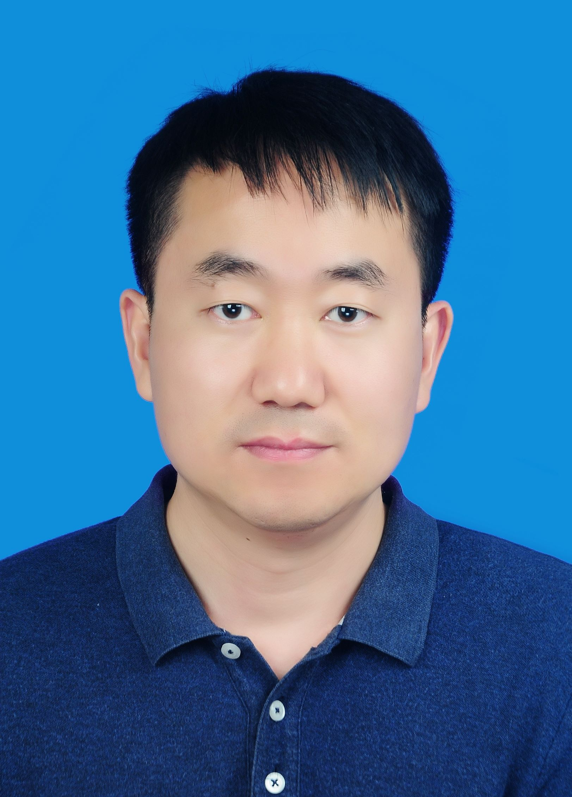

|  |
|
如果你想报考我的研究生，请先认真了解一下我，包括我的学习和工作经历，研究方向、承担的科研项目等情况，这些信息你可以在这里了解到。我的论文发表情况和最新动态情况，你可以在这里看到。完整的论文发表情况和我的合作者，你可以通过Google Scholar查看。另外，我也建议你也通过我的在读学生、已毕业学生和其他老师的了解我的学生、网络上的评价等途径了解我的指导情况。人都有优点和缺点，我也不例外，因此你除了要了解正面评价外，还应该了解一些负面评价( 有的不一定正确，请自己甄别)，然后结合自己的情况和期望来判断是否适合报考我这边。
我自认为对每位学生都认真负责，我期望我招的每位同学在我们团队几年的学习能在各方面都有本质的提升。在十多年的研究生指导过程中，我已经做到了跟每一位同学一起解决科研过程中遇到的困难，认真修改每一位同学的论文。经常站在学生的角度思考问题，注重学生的利益和发展，我把学生的成长看成是我科研成果和成就的重要组成部分。
我们不欢迎爱偷懒、拖延、不求上进的学生，如果你的目标只是想拿个研究生文凭，找个合适的工作，在三年的研究生学习中过得轻松点，那么你最好不要报考我们这边。我建议你可以报考“宽松型”或者“放养型”老师，你可以通过打听获得相关信息。我们这边的培养目标是，希望学生能在一个视觉问题上有深入的研究，解决一个技术难点，发表一篇高水平的学术论文。在这个过程中，我们希望你的调研能力、技术方案设计能力、编程能力、文档写作能力、团队合作能力等能得到实质性的锻炼和提升，离开团队时是一个“聪明、看问题深入、做事很专业”的形象。要达到这目标必须付出艰辛的努力，甚至承受一定的科研压力，同时需要跟老师和同学紧密合作。我们这边学生毕业时获得的成果，你可以通过我们发表的论文来了解。因此，我们这边的学习时间通常是比较紧张的，我们不支持你把时间花在家教、兼职、学生干部等事情上。我们支持你谈恋爱，但是反对你在这上面花大量时间。虽然我们希望你全身心投入到学习和科研中，但是我们希望你能合理安排时间加强体育锻炼，并保持身心健康。
我本科是学计算机的（ACM校队核心成员），硕博连读是在华科图像所做图像处理研究。在我的整个求学和科研过程中，我经历着落地应用技术研发。因此，我爱好技术研究，我也希望你爱好技术，希望你能未来能从事技术研究和管理的相关工作，或者创业。如果你内心比较排斥技术研究，我建议你不要报考我这边。
我们这边主要从事计算机视觉与机器学习相关的研究，当前的工作主要集中在利用深度学习技术解决一些计算机视觉任务问题。这些研究工作可以直接在实际中找到应用，是当前人工智能的研究热点。正因为如此，当前研究的人也非常多，所谓“内卷严重”。不过没有关系，我们的研究生通过自己的努力在老师的帮助下仍然可以发顶会顶刊论文。同时，毕业找工作的时候，也不一定非要找图像处理相关的工作。搞图像处理的好处是，你可以比较容易锻炼我上面提到的各种能力，而这些能力也是其他工作非常需要的。只要能获得这些能力，你不但可以胜任其他工作，而且还可以做得比较好。同时，我们的图像处理和机器学习算法具有一定的通用性，也可以比较容易地应用到其他领域。因此，我们团队的毕业生有相当一部分同学工作中并不做图像处理，但是大家都干得挺好，这个可以通过已毕业的同学了解。
对于发表了高水平成果的同学，我们支持到相关企业实习。这里要求高水平成果有两点原因：1）现在硕士学位论文都要上网公开，不定期抽查，学校和学院对硕士论文质量要求比较高，发表了高水平成果对你最后提交的硕士论文质量和顺利毕业都有保证；2）有了高水成果，你才能找到更合适的实习企业，我们希望企业实习内容是从事一些前沿技术研究工作，同时最好能跟我们的研究方向匹配。对于从事一些“打杂”工作的企业实习，我们坚决反对。因此，如果你有实习的打算，需要早日做准备。
我们毕业的学生有40+，遍布华为、腾讯、字节跳动、微软、Facebook（美国）、亚马逊（美国）等知名企业，也有在卡内基梅隆大学（CMU）、马里兰大学、悉尼科技大学、密西根州立大学等海外知名高校深造的同学。我们是一个大家庭，大家通过微信群和QQ群保持联系。如果你加入我们的这个大家庭，你可以通过这个大家庭获得帮助，我们也希望你未来能为这个大家庭提供帮助。
每位同学都有自己的爱好、特长和未来目标，我们对学生也是有自己的期望和目标。我们希望双方是完全“匹配的”，经过三年的努力，你虽然觉得很幸苦，但是你能收获满满地离开团队。如果误入团队发现不匹配，我们希望你能作出调整适应团队的管理模式，否则你会觉得很痛苦，感觉误入“大坑”。这不但对你来说是一个巨大的损失，对我们也是一个损失，因为我们把每位同学都放在一个重要的位置，如果你做不好，可能让我们这个方向的发展停滞1-2年。
招生要求：对专业无特别要求，但要求硕士学习阶段从事过图像与视频处理、机器学习相关的研究工作，且有相关论文发表。
培养情况：我们要求博士生专注基础研究，发表高水平论文，协助导师撰写项目申报书、结题材料等。我们的培养目标是让你博士毕业能够独立进行科研工作（包括凝练科学问题、项目申报与完成等）。博士期间，我们也会尽最大努力为你争取外部优质资源，包括与知名研究组的老师或者学生合作等。我们对发表论文数量没有明确要求，首先你要达到学校的毕业条件，然后我们鼓励你能够不断挑战，不断突破，希望博士期间的成果能成为你后续快速成长的基石。如果你对企业应用技术感兴趣，我们也可以提供支持，但不鼓励。
毕业去向：目前还没有毕业生。
招生要求：对专业无特别要求，但要求具有较好的编程能力，数学基础，英语读写能力（CET4以上）。我们每年也招没有太多编程基础的同学，但是如果你有一定的编程基础话，我们会优先考虑你，不过你要拿出实质性的证明材料，比如，在lintcode上的刷题记录。目前研究组的主流语言是python，如果你能熟练使用python语言，我们也会优先考虑你。团队目前主要用深度学习解决视觉任务问题，主要采用pytorch深度学习框架。如果你在这方面有一定的基础，我们也会优先考虑你，但是你要拿出实质性的证明材料，比如在天池上参加相关算法比赛或者学习赛记录。
培养情况：在科研深度上，我们团队的硕士生与博士生没有本质区别，可能的区别就是硕士是解决1-2个问题，而博士要解决多个问题。目前很多硕士同学都在顶刊和顶会上以第一作者发表学术论文（见Publications）。因此，我们要求每位硕士同学都能利用三年的时间尽自己最大的努力发表一篇高水平论文。如果你未成功，但是你确实努力了，我们认为你也是一名优秀的学生。
毕业去向：遍布华为、腾讯、字节跳动、微软、Facebook（美国）、亚马逊（美国）等知名企业，也有在卡内基梅隆大学（CMU）、马里兰大学、悉尼科技大学、密西根州立大学等海外知名高校深造的同学。
培养情况：我们团队每年会招收一定数量的本科生。到目前为止，在团队中参加过科研训练的同学已经两位数以上。在这些同学中，有一部分同学得到了非常成功的锻炼和能力的全面提升，如刘江，沈涛，孟上等，也有一部分同学并没有获得较大的提升。总结起来，这些收获不明显的同学存在自律、时间管理能力和编程动手能力的不足。因此，我们现在招生本科生的基本要求是，希望你能具备一定的编程能力。如果你编程能力较强，能够快速实现和验证想法，那么你就能够很好利用我们团队的资源实现自身能力的进一步提升。编程能力方面的锻炼，完全可以不用加入我们团队，可以利用网络资源（如B站）学习。由于我们团队使用python和pytorch比较多，因此，如果你对我们团队感兴趣，建议你提前学习一下这两方面的知识。可以在lintcode上做做题，在天池上做做图像处理相关的练习赛。
可能的收获： 对于优秀的本科生，我们的培养模式跟研究生没有太大的区别，因此，研究生能获得的能力和提升，理论上你也可以获得。就目前的培养情况来看，比较优秀的本科获得的收益主要表现在：参加相关比赛获奖，发表学术论文，在出国深造/考研/保研方面提供推荐和帮助。当然，我们更你希望你能留在研究组继续读研。